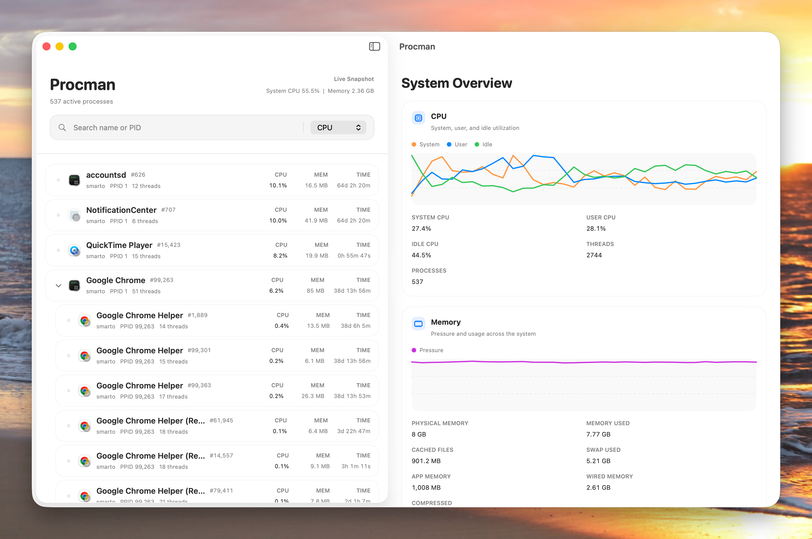

We craft intentional, high-performance tools that feel right at home on your Mac. No bloat, just pure utility.
A cultured take on process management. Gain total visibility into your system performance with a tree-first interface that replaces the clutter of traditional system monitors.
